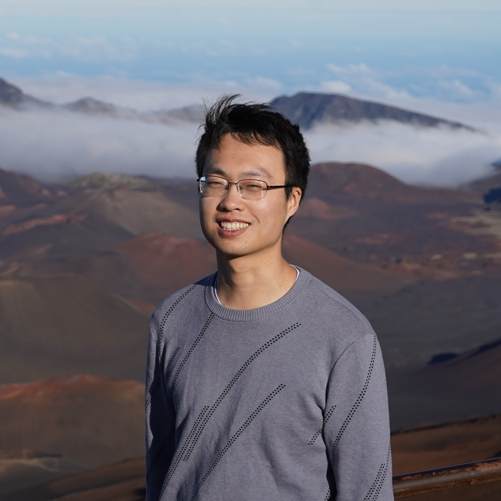

Xuheng Li
I am a Ph.D. student of the AGI Lab in the Department of Computer Science at the University of California, Los Angeles, advised by Prof. Quanquan Gu.
My research focuses on optimization and RL applied to the pre-training and post-training of LLMs. I am also interested in sampling based-methods, including the diffusion models and their applications. I am fascinated with in how the dynamics of high-dimensional models are shaped by the low-dimensional structure of the data and training algorithms.
News
-
Apr 2026
Heading to ICLR 2026 in Rio de Janeiro! I will be presenting two works:
-
Best-of-Majority: Minimax-Optimal Strategy for Pass@k Inference Scaling
Main conference, poster session 2 · Poster P4-#4306 · Afternoon of April 23 -
Dimension-Independent Convergence of Underdamped Langevin Monte Carlo in KL Divergence
DeLTa 2026 Workshop
-
Best-of-Majority: Minimax-Optimal Strategy for Pass@k Inference Scaling
-
Mar 2026
We just launched EurekaClaw, an AI research agent that captures your Eureka moments!
1/n 🦞 Introducing EurekaClaw💡 — a local-first AI research agent that captures your Eureka moments before they vanish. From idea → proof → experiment → paper — fully automated. Local-first. Zero data leak. 🔒
— EurekaClaw (@EurekaClaw) March 22, 2026